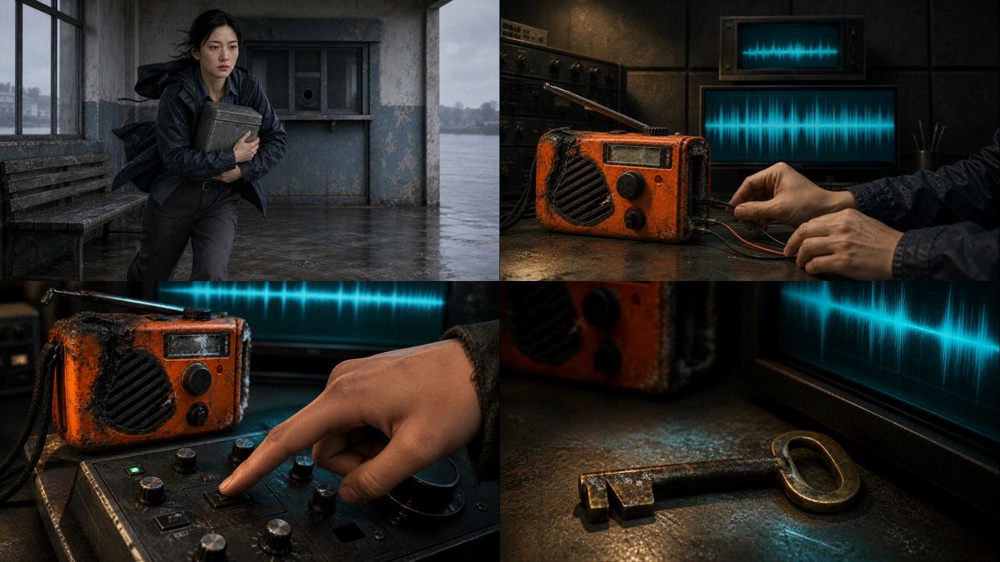

第 1 集 · 无声动态分镜
35 张关键帧按分镜切点组成，104.5 秒
这里把静态关键帧预演与真实 H3 视频分开列出。已登记 E01-01、E01-02，其中 E01-01 v01 已判定为衔接失败样本；E01-02 仍是候选，不等于正式采用。
35 张关键帧按分镜切点组成，104.5 秒
E01-01-v01.mp4；奔向门准备开门，无法连接下一段回长椅开箱。保留作失败证据，重做使用 v02。
E01-02-v01.mp4；已归档，仍须与上一段和下一段连播 QC 后才能正式采用。
13.67 秒、含声音，真实模型验证样本
用于对比真实 H3 成片与原始关键帧节奏
3 张图，9.5 秒
4 张图，13 秒
定时、画幅和关键镜头检查图
